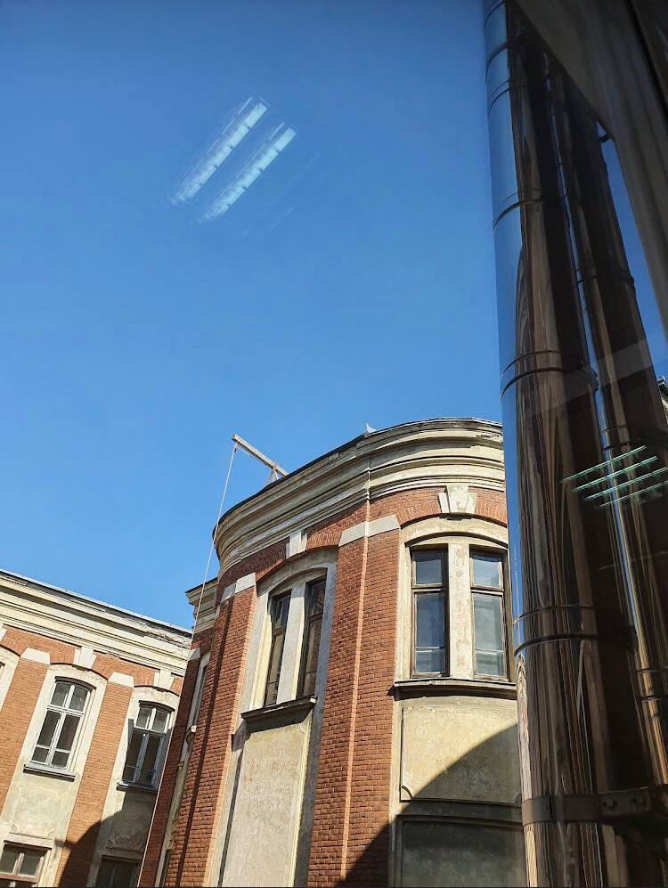

Our Campus
We have 19 faculties, some of them are located in separate campuses.

Physical Culture

Economics

Ivan Franko National University of Lviv is a classical higher education institution with powerful scientific schools, ancient traditions and modern innovative approaches.
Visit Us To know MoreFaculty of Biology. Geography faculty. Faculty of Foreign Languages. Faculty of Applied Mathematics and Informatics. Faculty of Law and others...
We provide bachelor's degree. The bachelor's program usually involves a 4-year initial fundamental training in the chosen field of knowledge. During the course of study, the student learns basic information from other scientific fields, mainly of a general educational nature
After we provide for our students Master's degree. The duration of the master's degree varies depending on the university and the study program. On average — 1.5-2 years.
It goes after Master's degree. After completion of postgraduate studies, a dissertation for obtaining the scientific degree of candidate of sciences was submitted to the specialized academic council for defense.
We have 19 faculties, some of them are located in separate campuses.
University provides bunch of the best and the most relevant facilities, which are liked by thousands of students around the world.

University has large libraries, in different places, in separate buildings. Students have access to the most recent books and information from all over the world.

Our university has severeal sport complexes, which include several playgrounds. They are considered as the best in the city.

Each building is provided with cafeteria, so that our students have access to high quality nutrition.
Here are some feedbacks from our students, graduates and postgraduates.

I sincerely thank the leadership of the Ivan Franko University of Lviv for saving my mother, academician, doctor of sciences, professor, head of the department Viktoriya Opanasivna Samokhin, and especially the director of the library Vasyl Kmet, the vice-chancellors of the university for all the help, support and organization of sending her to France My mother expresses immense gratitude for attention to her, for priceless little things and big actions, without which she would not survive at such a time.

Great university! I proudly say - my favorite) many years of history, professional teaching staff - the community that truly educates a Person 💛